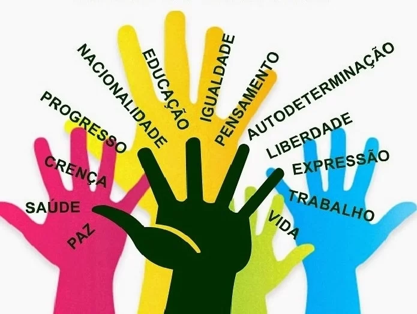

Construindo uma sociedade mais justa
A defesa dos direitos humanos é responsabilidade de toda a sociedade e exige empatia, educação e ação coletiva. Colocar-se no lugar do outro permite compreender suas dificuldades e agir com solidariedade, enquanto a educação inclusiva desperta a consciência sobre respeito, igualdade e participação social. Para transformar essa consciência em realidade, é necessário o comprometimento conjunto de indivíduos, comunidades e governos na criação de políticas que promovam justiça e oportunidades para todos. Assim, cada pessoa que assume seu papel na proteção da dignidade humana contribui para um futuro mais justo, solidário e igualitário.
O papel da conscientização
A conscientização sobre os direitos e deveres humanos desempenha um papel essencial na construção de sociedades mais justas, solidárias e democráticas. Quando as pessoas compreendem seus direitos fundamentais como liberdade, igualdade, segurança e dignidade tornam-se mais capazes de reconhecê-los, defendê-los e exigir que sejam respeitados. Esse conhecimento fortalece a autonomia individual e coletiva, permitindo que cada cidadão participe de forma ativa na vida social e política.
No entanto, conhecer apenas os direitos não é suficiente. A compreensão dos deveres humanos é igualmente necessária para manter o equilíbrio social. Deveres como respeitar o próximo, cumprir leis, agir com responsabilidade e promover a convivência pacífica asseguram que o exercício dos direitos não prejudique os demais. A conscientização, nesse sentido, funciona como uma ponte entre liberdade e responsabilidade.
Além disso, a educação em direitos humanos presente nas escolas, nas comunidades e nos meios de comunicação tem o poder de transformar mentalidades. Ela combate preconceitos, incentiva a empatia e fortalece a cultura de paz. Pessoas conscientes tendem a denunciar injustiças, apoiar causas sociais e participar de movimentos que promovem igualdade e inclusão.
Portanto, a conscientização não é apenas um processo de aprendizado, mas também uma ferramenta de transformação social. Quando indivíduos compreendem plenamente seus direitos e deveres, contribuem para a construção de uma sociedade mais humana, onde a dignidade de todos é reconhecida, protegida e valorizada.
Transformando realidades
A conscientização sobre direitos e deveres humanos é uma força capaz de transformar realidades. Quando uma pessoa descobre que possui direitos como dignidade, respeito, liberdade e igualdade ela passa a enxergar a si mesma de outra maneira. O que antes parecia destino imutável torna-se possibilidade de mudança, pois o conhecimento desperta coragem, fortalece vozes e incentiva atitudes que rompem ciclos de injustiça e exclusão.
Da mesma forma, compreender os deveres humanos respeitar o outro, agir com responsabilidade, cumprir leis e promover a convivência — constrói um ambiente onde todos podem crescer. Ao reconhecer que cada ação tem impacto, indivíduos se tornam agentes de melhoria na comunidade. Pequenas atitudes conscientes, quando multiplicadas, produzem transformações significativas, fortalecendo laços, reduzindo conflitos e inspirando solidariedade.
A educação em direitos humanos tem papel decisivo nesse processo. Ao iluminar o que muitas vezes é silencioso ou invisível, ela ajuda pessoas a identificarem violações, questionarem desigualdades e participarem ativamente das mudanças sociais. Assim, a conscientização deixa de ser apenas conhecimento e se torna movimento — um movimento capaz de transformar vidas e construir futuros mais justos, humanos e igualitários para todos.
Participe!
Participar de projetos sociais, culturais ou comunitários é uma oportunidade de transformar o entorno e, ao mesmo tempo, crescer como indivíduo. Ao se envolver em iniciativas que promovem educação, solidariedade, sustentabilidade ou apoio a grupos vulneráveis, cada pessoa descobre seu potencial de impacto e percebe que pequenas ações podem gerar grandes mudanças. O engajamento fortalece a autonomia, amplia a visão de mundo e cria conexões que inspiram novas formas de agir e pensar.
Além disso, integrar-se a projetos significa assumir um papel ativo na construção de uma sociedade mais justa. Quando mais pessoas se unem em torno de objetivos comuns, surgem soluções criativas, ambientes colaborativos e uma rede de apoio capaz de influenciar realidades inteiras. Participar é escolher não ficar à margem: é decidir fazer parte da mudança, contribuindo para um futuro mais humano, consciente e transformador.